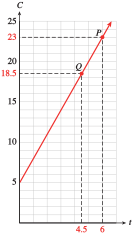

Delbert is offered a part-time job selling restaurant equipment. He will be paid $1000 per month plus a 6% commission on his sales. The sales manager tells Delbert he can expect to sell about $8000 worth of equipment per month. To help him decide whether to accept the job, Delbert does a few calculations.
Based on the sales managers estimate, what monthly income can Delbert expect from this job? What annual salary would that provide?
What would Delberts monthly salary be if he sold only $5000 of equipment per month? What would his salary be if he sold $10,000 worth per month? Compute monthly incomes for each sales total shown in the table.
Sales
Income
5000
8000
10,000
12,000
15,000
18,000
20,000
25,000
30,000
35,000
Plot your data points on a graph, using sales, \(S\text{,}\) on the horizontal axis and income, \(I\text{,}\) on the vertical axis, as shown in the figure. Connect the data points to show Delberts monthly income for all possible monthly sales totals.
Add two new data points to the table by reading values from your graph.
Write an algebraic expression for Delberts monthly income, \(I\text{,}\) in terms of his monthly sales, \(S\text{.}\) Use the description in the problem to help you:
He will be paid: $1000 . . . plus a 6% commission on his sales.
Income\(= \fillinmath{XXXXXXXXXXXXXXX}\)
Test your formula from part (5) to see if it gives the same results as those you recorded in the table.
Use your formula to find out what monthly sales total Delbert would need in order to have a monthly income of $2500.
Each increase of $1000 in monthly sales increases Delberts monthly income by .
Summarize the results of your work: In your own words, describe the relationship between Delberts monthly sales and his monthly income. Include in your discussion a description of your graph.
SubsectionTables, Graphs and Equations
The first step in creating a model is to describe relationships between variables. In Investigation1.1, we analyzed the relationship between Delberts sales and his income. Starting from a verbal description, we represented the relationship in three different ways.
A table of values displays specific data points with precise numerical values.
A graph is a visual display of the data. It is easier to spot trends and describe the overall behavior of the variables from a graph.
An algebraic equation is a compact summary of the model. It can be used to analyze the model and to make predictions
We begin our study of modeling with some examples of linear models. In the examples that follow, observe the interplay among the three modeling tools, and how each contributes to the model.
Example1.1.
Annelise is on vacation at a seaside resort. She can rent a bicycle from her hotel for $3 an hour, plus a $5 insurance fee. (A fraction of an hour is charged as the same fraction of $3.)
Make a table of values showing the cost, \(C\text{,}\) of renting a bike for various lengths of time, \(t\text{.}\)
Plot the points on a graph. Draw a curve through the data points.
Write an equation for \(C\) in terms of \(t\text{.}\)
Solution.
To find the cost, we multiply the time by $3, and add the result to the $5 insurance fee. For example, the cost of a 1-hour bike ride is
\begin{align*}
\text{Cost}\amp=(\$5\text{ insurance fee})+(\$3\text{ per hour})\times(\alert{1}\text{ hour})\\
C\amp=5+3(\alert{1})=8
\end{align*}
A 1-hour bike ride costs $8. We record the results in a table, as shown here:
Length of rental (hours)
Cost of rental (dollars)
\((t,C)\)
\(1\)
\(8\)
\(\quad C=5+3(\alert{1})\quad\)
\((1,8)\)
\(2\)
\(11\)
\(C=5+3(\alert{2})\)
\((2,11)\)
\(3\)
\(14\)
\(C=5+3(\alert{3})\)
\((3,14)\)
Each pair of values represents a point on the graph. The first value gives the horizontal coordinate of the point, and the second value gives the vertical coordinate. The points lie on a straight line, as shown in the figure. The line extends infinitely in only one direction, because negative values of \(t\) do not make sense here.
To write an equation, we let \(C\) represent the cost of the rental, and we use \(t\) for the number of hours:
\begin{align*}
\text{Cost}\amp=(\$5\text{ insurance fee})+(\$3\text{ per hour})\times\text{(number of hours)}\\
C\amp=5+3\cdot t
\end{align*}
Checkpoint1.2.QuickCheck 1.
When you graph the data given in a table, on which axis do you show the variable in the first row of the table?
The linear axis
The horizontal axis
The vertical axis
Both axes
Example1.3.
Use the equation \(C=5+3\cdot t\) you found in Example1.1 to answer the following questions. Then show how to find the answers by using the graph.
How much will it cost Annelise to rent a bicycle for 6 hours?
How long can Annelise bicycle for $18.50?
Solution.
We substitute \(t=\alert{6}\) into the expression for \(C\) to find
A 6-hour bike ride will cost $23. The point \(P\) on the graph in the figure represents the cost of a 6-hour bike ride. The value on the \(C\)-axis at the same height as point \(P\) is 23, so a 6-hour bike ride costs $23.
We substitute \(C=\alert{18.50}\) into the equation and solve for \(t\text{.}\)
For $18.50 Annelise can bicycle for 4 hours. The point \(Q\) on the graph represents an $18.50 bike ride. The value on the \(t\)-axis below point \(Q\) is 4.5, so $18.50 will buy a 4.5 hour bike ride.

Note1.4.
In Example1.3, notice the different algebraic techniques we used in parts (a) and (b).
In part (a), we were given a value of \(t\) and we evaluated the expression \(5+3t\) to find \(C\text{.}\)
In part (b) we were given a value of \(C\) and we solved the equation \(C=5+3t\) to find \(t\text{.}\)
Checkpoint1.5.Practice 1.
Frank plants a dozen corn seedlings, each 6 inches tall. With plenty of water and sunlight they will grow approximately 2 inches per day. Complete the table of values for the height, \(h\text{,}\) of the seedlings after \(t\) days.
Complete the table of values for the height, \(h\) of the seedlings after \(t\) days.
\(t\)
\(0\)
\(5\)
\(10\)
\(15\)
\(20\)
\(h\)
\(\hphantom{00}\)
\(\hphantom{000}\)
\(\hphantom{000}\)
\(\hphantom{000}\)
\(\hphantom{000}\)
Write an equation for the height \(h\) of the seedlings in terms of the number \(t\) of days since they were planted.
Graph the equation.
Solution.
\(\displaystyle h = 6 + 2t\)
Checkpoint1.6.Practice 2.
Use your equation from Practice 1 to answer the questions. Illustrate each answer on the graph.
How tall is the corn after 3 weeks?
How long will it be before the corn is 6 feet tall? Hint: Convert feet to inches.
Solution.
48 inches tall
33 days
Checkpoint1.7.Pause and Reflect.
What is the difference between an expression and an equation?
SubsectionChoosing Scales for the Axes
To create a useful graph, we must choose appropriate scales for the axes.
The axes must extend far enough to show the values of the variables.
The tick marks should be equally spaced.
Usually we should use no more than 10 or 15 tick marks.
Example1.8.
In 1990, the median price of a home in the US was $92,000. The median price increased by about $4700 per year over the next decade.
Make a table of values showing the median price of a house in 1990, 1994, 1998, and 2000.
Choose suitable scales for the axes and plot the values you found in part (a) on a graph. Use \(t\text{,}\) the number of years since 1990, on the horizontal axis and the price of the house, \(P\text{,}\) on the vertical axis. Draw a curve through the points.
Write an equation that expresses \(P\) in terms of \(t\text{.}\)
How much did the price of the house increase from 1990 to 1996? Illustrate the increase on your graph.
Solution.
In 1990 the median price was $92,000. Four years later, in 1994, the price had increased by \(\alert{4}(4700)=18,800\) dollars, so
You can verify the price of the house in 2000 by a similar calculation.
Year
Price of House)
\((t,P)\)
\(1990\)
\(92,000\)
\((0,\, 92,000)\)
\(1994\)
\(110,800\)
\((4,\, 110,800)\)
\(1998\)
\(129,600\)
\((8,\, 129,600)\)
\(2000\)
\(139,000\)
\((10,\, 139,000)\)
We let \(t\) stand for the number of years since 1990, so that \(t=0\) in 1990, \(t=4\) in 1994, and so on. To choose scales for the axes, we look at the values in the table. For this graph we scale the horizontal axis, or \(t\)-axis, in 1-year intervals and the vertical axis, or \(P\)-axis, for $90,000 to $140,000 in intervals of $5,000. The points lie on a straight line, as shown in the figure.
Look back at the calculations in part (a). The price of the house started at $92,000 in 1990 and increased by \(t \times 4700\) dollars after \(t\) years. Thus,
\begin{equation*}
P=92,000+4700t
\end{equation*}
We find the points on the graph for 1990 and 1996. These points lie above \(t=0\) and \(t=6\) on the \(t\)-axis. Next we find the values on the \(P\)-axis corresponding to the two points. The values are \(P=92,000\) in 1990 and \(P=120,200\) in 1996. The increase in price is the difference of the two \(P\)-values.
\begin{align*}
\text{increase in price}\amp=120,200-92,000\\
\amp=28,200
\end{align*}
The price of the home increased $28,200 between 1990 and 1996. This increase is indicated by the arrows in the figure.
Checkpoint1.9.QuickCheck 2.
If \(C\) is expressed in terms of \(H\text{,}\) which variable goes on the horizontal axis?
Note1.10.
The graphs in the preceding examples are increasing graphs. As we move along the graph from left to right (in the direction of increasing \(t\) ), the second coordinate increases as well. Try Checkpoint1.11, which illustrates a decreasing graph.
Checkpoint1.11.Practice 3.
Silver Lake has been polluted by industrial waste products. The concentration of toxic chemicals in the water is currently 285 parts per million (ppm). Environmental officials would like to reduce the concentration by 15 ppm each year.
Complete the table of values showing the desired concentration, \(C\text{,}\) of toxic chemicals \(t\) years from now. For each \(t\)-value, calculate the corresponding value for \(C\text{.}\) Write your answers as ordered pairs.
\(t\)
\(C\)
\((t,C)\)
\(0\)
\(C=285-15(\alert{0})\)
\((0, \hphantom{00} )\)
\(5\)
\(C=285-15(\alert{5})\)
\((5, \hphantom{00} )\)
\(10\)
\(C=285-15(\alert{10})\)
\((10, \hphantom{00} )\)
\(15\)
\(C=285-15(\alert{15})\)
\((15, \hphantom{00} )\)
To choose scales for the axes, notice that the value of \(C\) starts at 285 and decreases from there. Well scale the vertical axis up to 300, and use 10 tick marks at intervals of 30. Graph the ordered pairs on the grid, and connect them with a straight line.
Write an equation for the concentration, \(C\text{,}\) of toxic chemicals \(t\) years from now. Hint: The concentration is initially 285 ppm, and we subtract 15 ppm for each year that passes, or \(15 \times t\text{.}\)
Solution.
\((t,C)\)
\((0,285)\)
\((5,210)\)
\((10,135)\)
\((15,60)\)
\(\displaystyle C=285-15t\)
Note1.12.
In the previous Exercise, we extend the graph until it reaches the horizontal axis, but no farther. Points with negative \(C\)-coordinates have no meaning for the problem.
Checkpoint1.13.QuickCheck 3.
If \(x \gt 5\text{,}\) what is true about \(-2x\text{?}\)
It is greater than 3
It is less than 3
It is greater than 10
It is less than \(-10\)
Technology1.14.Graphing an Equation.
We can use a graphing utililty to graph an equation. On most utilities, we follow three steps.
To Graph an Equation:
Press Y= and enter the equation you wish to graph.
Press WINDOW and select a suitable graphing window.
For this graph, well use the grid in Example1.8 for our window settings, so we press WINDOW and enter
Xmin\(=0\)
Xmax\(=10\)
Ymin\(=90,000\)
Ymax\(=140,000\)
Finally, we press GRAPH. The graph is shown in the figure.
Checkpoint1.16.Practice 4.
Solve the equation \(2y-1575=45x\) for \(y\) in terms of \(x\text{.}\)
Graph the equation with a graphing utility. Use the window
Xmin\(=-50\)
Xmax\(=50\)
Xscl\(=5\)
Ymin\(=-500\)
Ymax\(=1000\)
Yscl\(=100\)
Sketch the graph on paper. Use the window settings to choose appropriate scales for the axes.
Solution.
\(\displaystyle y=(1575+45x)/2 \)
Checkpoint1.17.QuickCheck 4.
What is wrong with the grid above?
The grid lines on the \(x\)-axis are not evenly spaced.
The scale on the \(y\)-axis does not start at 0.
The axes are not labeled with the variables.
All of the above.
SubsectionLinear Equations
All the models in the preceding examples have equations with a similar form:
\begin{equation*}
\blert{y=\text{(starting value)}+\text{(rate of change)}\cdot x}
\end{equation*}
(Well talk more about rate of change in Section1.4.) Their graphs were all portions of straight lines. For this reason such equations are called linear equations. The order of the terms in the equation does not matter. For example, the equation in Example1.1,
This form of a linear equation, \(Ax+By=C \text{,}\) is called the general form.
General Form for a Linear Equation.
The graph of any equation
\begin{equation*}
Ax+By=C
\end{equation*}
where \(A\) and \(B\) are not both equal to zero, is a straight line.
Example1.18.
The manager at Alberts Appliances has $3000 to spend on advertising for the next fiscal quarter. A 30-second spot on television costs $150 per broadcast, and a 30-second radio ad costs $50.
The manager decides to buy \(x\) television ads and \(y\) radio ads. Write an equation relating \(x\) and \(y\text{.}\)
Make a table of values showing several choices for \(x\) and \(y\text{.}\)
Plot the points from your table, and graph the equation.
Solution.
Each television ad costs $150, so \(x\) ads will cost $\(150x\text{.}\) Similarly, \(y\) radio ads will cost $\(50y\text{.}\) The manager has $3000 to spend, so the sum of the costs must be $3000. Thus,
\begin{equation*}
150x+50y=3000
\end{equation*}
We choose some values of \(x\text{,}\) and solve the equation for the corresponding value of \(y\text{.}\) For example, if \(x=\alert{10}\) then
If the manager buys 10 television ads, she can also buy 30 radio ads. You can verify the other entries in the table.
\(x\)
\(8\)
\(10\)
\(12\)
\(14\)
\(y\)
\(36\)
\(30\)
\(24\)
\(18\)
We plot the points from the table. All the solutions lie on a straight line, as shown in the figure.
Checkpoint1.19.Practice 5.
In central Nebraska, each acre of corn requires 25 acre-inches of water per year, and each acre of winter wheat requires 18 acre-inches of water. (An acre-inch is the amount of water needed to cover one acre of land to a depth of one inch.) A farmer can count on 9000 acre-inches of water for the coming year. (Source: Institute of Agriculture and Natural Resources, University of Nebraska)
Write an equation relating the number of acres of corn, \(x\text{,}\) and the number of acres of wheat, \(y\text{,}\) that the farmer can plant.
Complete the table. Round your answers to tenths.
\(x\)
\(50\)
\(100\)
\(150\)
\(200\)
\(y\)
\(\hphantom{0000}\)
\(\hphantom{0000}\)
\(\hphantom{0000}\)
\(\hphantom{0000}\)
Solution.
\(\displaystyle 25x+18y=9000\)
\(x\)
\(50\)
\(100\)
\(150\)
\(200\)
\(y\)
\(430.6\)
\(361.1\)
\(291.7\)
\(222.2\)
Checkpoint1.20.Pause and Reflect.
Write down two different equation forms for linear models. Which do you think is easier to use?
SubsectionIntercepts
Consider the graph of the equation
\begin{equation*}
3x-4y=12
\end{equation*}
shown at left. The points where the graph crosses the axes are called the intercepts of the graph. The coordinates of these points are easy to find.
The \(y\)-coordinate of the \(x\)-intercept is zero, so we set \(y=\alert{0}\) in the equation to get
The \(x\)-intercept is the point \((-3,0)\text{.}\) Also, the \(x\)-coordinate of the \(y\)-intercept is zero, so we set \(x=\alert{0}\) in the equation to get
The \(C\)-intercept is the point \((0, 285)\text{,}\) or simply \(285\text{.}\)
To find the \(t\)-intercept, we set \(C\) equal to zero and solve for \(t\text{.}\)
\begin{equation*}
\begin{aligned}[t]
\alert{0}\amp =285-15t \amp \amp \blert{\text{Add }15t \text{ to both sides.}}\\
15t\amp =285 \amp \amp \blert{\text{Divide both sides by 15.}}\\
t\amp =19
\end{aligned}
\end{equation*}
The \(t\)-intercept is the point \((19,0)\text{,}\) or simply \(19\text{.}\)
The \(C\)-intercept represents the concentration of toxic chemicals in Silver Lake now: When \(t=0\text{,}\)\(C=285\text{,}\) so the concentration is currently \(285\) ppm.
The \(t\)-intercept represents the number of years it will take for the concentration of toxic chemicals to drop to zero: When \(C=0\text{,}\)\(t=19\text{,}\) so it will take \(19\) years for the pollution to be eliminated entirely.
Checkpoint1.23.QuickCheck 6.
Delbert says that the intercepts of the line \(3x+5y=30\) are \((10,6)\text{.}\) What is wrong with his answer?
\((10,6)\) is not on the \(x\)-axis.
An intercept must have a 0 coordinate.
The line has two intercepts.
All of the above.
Checkpoint1.24.Practice 6.
Find the intercepts of the graph in Example1.18, about the advertising budget for Alberts Appliances: \(150x + 50y = 3000\text{.}\)
What do the intercepts tell us about the problem?
Solution.
The \(x\)-intercept is \((20, 0)\text{.}\) The \(y\)-intercept is \((0, 60)\text{.}\)
The manager can buy 20 television ads if she buys no radio ads. She can buy 60 radio ads if she buys no television ads.
Checkpoint1.25.Pause and Reflect.
Explain how the words intercept and intersect are related, and how they are different.
SubsectionIntercept Method for Graphing Lines
Because we really only need two points to graph a linear equation, we might as well find the intercepts first and use them to draw the graph. The values of the intercepts will also help us choose suitable scales for the axes. It is always a good idea to find a third point as a check.
Example1.26.
Find the \(x\)- and \(y\)-intercepts of the graph of \(150x - 180y = 9000\text{.}\)
Use the intercepts to graph the equation. Find a third point as a check.
Solution.
To find the \(x\)-intercept, we set \(y = \alert{0}\text{.}\)
The \(y\)-intercept is the point \((0, -50)\text{.}\)
We scale both axes in intervals of 10 and then plot the two intercepts, \((60, 0)\) and \((0, -50)\text{.}\) We draw the line through them, as shown below. Finally, we find another point and check that it lies on this line. We choose \(x = \alert{20}\) and solve for \(y\text{.}\)
We plot the point \((20, -33\frac{1}{3})\text{.}\) Because this point lies on the line, we can be reasonably confident that our graph is correct.
Checkpoint1.27.QuickCheck 7.
Is it possible for the \(x\)-intercept and the \(y\)-intercept of a line to be the same point?
To Graph a Line Using the Intercept Method:.
Find the intercepts of the line.
To find the \(x\)-intercept, set \(y=0\) and solve for \(x\text{.}\)
To find the \(y\)-intercept, set \(x=0\) and solve for \(y\text{.}\)
Plot the intercepts.
Choose a value for \(x\) and find a third point on the line.
Draw a line through the points.
Checkpoint1.28.QuickCheck 8.
How many points do you need to graph a linear equation?
Two
Three
One in each quadrant
It depends on the equation
Technology1.29.Choosing a Graphing Window.
Knowing the intercepts can also help us choose a suitable window on a graphing utility. We would like the window to be large enough to show the intercepts. For the graph in the example above, we can enter the equation
\begin{equation*}
Y = (9000 -150X)/{-180}
\end{equation*}
in the window
Xmin\(=-20\)
Xmax\(=70\)
Ymin\(=-70\)
Ymax\(=30\)
Checkpoint1.30.Practice 7.
In Checkpoint1.19 you wrote an equation about crops in Nebraska.
Find the intercepts of the graph.
Use the intercepts to help you choose appropriate scales for the axes, and then graph the equation.
What do the intercepts tell us about the crops?
Solution.
The \(x\)-intercept is \((360, 0)\text{.}\) The \(y\)-intercept is \((0, 500)\text{.}\)
If he plants no wheat, the farmer can plant 360 acres of corn. If he plants no corn, the farmer can plant 500 acres of wheat.
Note1.31.
The examples in this section model simple linear relationships between two variables. Such relationships, in which the value of one variable is determined by the value of the other, are called functions. We will study various kinds of functions throughout the course.
Checkpoint1.32.Pause and Reflect.
What was the most difficult part of this section to understand? Write a question whose answer would help you understand it.
SubsectionSection Summary
SubsubsectionVocabulary
Look up the definitions of new terms in the Glossary.
Variable
Solve an equation
Evaluate an expression
Linear equation
Increasing graph
Decreasing graph
Intercept
Mathematical model
SubsubsectionCONCEPTS
We can describe a relationship between variables with a table of values, a graph, or an equation.
Linear models have equations of the following form:
\begin{equation*}
y = (\text{starting value}) + (\text{rate of change})\cdot x
\end{equation*}
To make a useful graph, we must choose appropriate scales for the axes.
General Form for a Linear Equation.
The graph of any equation
\begin{equation*}
Ax+By=C
\end{equation*}
where \(A\) and \(B\) are not both equal to zero, is a straight line.
The intercepts of a graph are the points where the graph crosses the axes.
We can use the intercepts to graph a line.
To Graph a Line Using the Intercept Method:.
Find the intercepts of the line.
To find the \(x\)-intercept, set \(y=0\) and solve for \(x\text{.}\)
To find the \(y\)-intercept, set \(x=0\) and solve for \(y\text{.}\)
Plot the intercepts.
Choose a value for \(x\) and find a third point on the line.
Draw a line through the points.
The intercepts are also useful for interpreting a model.
SubsubsectionSTUDY QUESTIONS
Name three ways to represent a relationship between two variables.
If \(C\) is expressed in terms of \(H\text{,}\) which variable goes on the horizontal axis?
Explain the difference between evaluating an expression and solving an equation.
How many points do you need to graph a linear equation?
Explain how the words intercept and intersect are related; explain how they are different.
Delbert says that the intercepts of the line \(3x + 5y = 30\) are \((10, 6)\text{.}\) What is wrong with his answer?
SubsubsectionSKILLS
Practice each skill in the Homework problems listed.
Make a table of values: #14, 7 and 8
Plot points and draw a graph: #14, 7 and 8
Choose appropriate scales for the axes: #512
Write a linear model of the form \(y = (\text{starting value}) + (\text{rate of change})\cdot x\text{:}\) #18
Write a linear model in general form: #2528, 3336
Evaluate a linear expression, algebraically and graphically: #14
Solve a linear equation, algebraically and graphically: #14
Find the intercepts of a graph: #5 and 6, 1324, 4552
Graph a line by the intercept method: #5 and 6, 1324
Interpret the meaning of the intercepts: #5 and 6, 2528
Use a graphing calculator to graph a line: #3752
Sketch on paper a graph obtained on a calculator: #3744
ExercisesHomework 1.1
1.
The temperature in the desert at 6 a.m., just before sunrise, was \(65\degree\)F. The temperature rose \(5\) degrees every hour until it reached its maximum value at about 5 p.m. Complete the table of values for the temperature, \(T\text{,}\) at \(h\) hours after 6 a.m.
\(h\)
\(0\)
\(3\)
\(6\)
\(9\)
\(10\)
\(T\)
\(\hphantom{0000}\)
\(\hphantom{0000}\)
\(\hphantom{0000}\)
\(\hphantom{0000}\)
\(\hphantom{0000}\)
Write an equation for the temperature, \(T\text{,}\) in terms of \(h\text{.}\)
Graph the equation.
How hot is it at noon? Illustrate the answer on your graph.
When will the temperature be \(110\degree\)F? Illustrate the answer on your graph.
2.
The taxi out of Dulles Airport charges a traveler with one suitcase an initial fee of $\(2.00\text{,}\) plus $\(1.50\) for each mile traveled. Complete the table of values showing the charge, \(C\text{,}\) for a trip of \(n\) miles.
\(n\)
\(0\)
\(5\)
\(10\)
\(15\)
\(20\)
\(25\)
\(C\)
\(\hphantom{0000}\)
\(\hphantom{0000}\)
\(\hphantom{0000}\)
\(\hphantom{0000}\)
\(\hphantom{0000}\)
\(\hphantom{0000}\)
Write an equation for the charge, \(C\text{,}\) in terms of the number of miles traveled, \(n\text{.}\)
Graph the equation.
What is the charge for a trip to Mount Vernon, \(40\) miles from the airport? Illustrate the answer on your graph.
If a ride to the National Institutes of Health (NIH) costs $\(39.50\text{,}\) how far is it from the airport to the NIH? Illustrate the answer on your graph.
3.
On October 31, Betty and Paul fill their \(250\)-gallon oil tank for their heater. Beginning in November, they use an average of \(15\) gallons of oil per week. Complete the table of values for the amount of oil, \(A\text{,}\) left in the tank after \(w\) weeks.
\(w\)
\(0\)
\(4\)
\(8\)
\(12\)
\(16\)
\(A\)
\(\hphantom{0000}\)
\(\hphantom{0000}\)
\(\hphantom{0000}\)
\(\hphantom{0000}\)
\(\hphantom{0000}\)
Write an equation that expresses the amount of oil, \(A\text{,}\) in the tank in terms of the number of weeks, \(w\text{,}\) since October 31.
Graph the equation.
How much did the amount of fuel oil in the tank decrease between the third week and the eighth week? Illustrate this amount on the graph.
When will the tank contain more than \(175\) gallons of fuel oil? Illustrate on the graph.
4.
Leons camper has a \(20\)-gallon gas tank, and he gets \(12\) miles to the gallon. (That is, he uses \(\frac{1}{12}\) gallon per mile.) Complete the table of values for the amount of gas, \(g\text{,}\) left in Leons tank after driving \(m\) miles.
\(m\)
\(0\)
\(48\)
\(96\)
\(144\)
\(192\)
\(g\)
\(\hphantom{0000}\)
\(\hphantom{0000}\)
\(\hphantom{0000}\)
\(\hphantom{0000}\)
\(\hphantom{0000}\)
Write an equation that expresses the amount of gas, \(g\text{,}\) in Leons fuel tank in terms of the number of miles, \(m\text{,}\) he has driven.
Graph the equation.
How much gas will Leon use between 8 a.m., when his odometer reads \(96\) miles, and 9 a.m., when the odometer reads \(144\) miles? Illustrate on the graph.
If Leon has less than \(5\) gallons of gas left, how many miles has he driven? Illustrate on the graph.
5.
Phil and Ernie buy a used photocopier for $\(800\) and set up a copy service on their campus. For each hour that the copier runs, Phil and Ernie make $\(40\text{.}\)
Write an equation that expresses Phil and Ernies profit (or loss), \(P\text{,}\) in terms of the number of hours, \(t\text{,}\) they run the copier.
Find the intercepts and sketch the graph. (Suggestion: Scale the horizontal axis from \(0\) to \(40\) in increments of \(5\text{,}\) and scale the vertical axis from \(-1000\) to \(400\) in increments of \(100\text{.}\))
What do the intercepts tell us about the profit?
6.
A deep-sea diver is taking some readings at a depth of \(400\) feet. He begins rising at \(20\) feet per minute.
Write an equation that expresses the divers altitude, \(h\text{,}\) in terms of the number of minutes, \(m\text{,}\) elapsed. (Consider a depth of \(400\) feet as an altitude of \(-400\) feet.)
Find the intercepts and sketch the graph. (Suggestion: Scale the horizontal axis from \(0\) to \(24\) in increments of \(2\text{,}\) and scale the vertical axis from \(-500\) to \(100\) in increments of \(50\text{.}\))
What do the intercepts tell us about the divers depth?
7.
There are many formulas for estimating the annual cost of driving. The Automobile Club estimates that fixed costs for a small carincluding insurance, registration, depreciation, and financingtotal about $\(5000\) per year. The operating costs for gasoline, oil, maintenance, tires, and so forth are about \(12.5\) cents per mile. (Source: Automobile Association of America)
Write an equation for the annual driving cost, \(C\text{,}\) in terms of \(d\text{,}\) the number of miles driven.
Complete the table of values.
Miles Driven
\(4000\)
\(8000\)
\(12,000\)
\(16,000\)
\(20,000\)
Cost ($)
\(\hphantom{0000}\)
\(\hphantom{0000}\)
\(\hphantom{0000}\)
\(\hphantom{0000}\)
\(\hphantom{0000}\)
Choose scales for the axes and graph the equation.
How much does the annual cost of driving increase when the mileage increases from \(8000\) to \(12,000\) miles? Illustrate this amount on the graph.
How much mileage will cause the annual cost to exceed $\(7000\text{?}\) Illustrate on the graph.
8.
The boiling point of water changes with altitude. At sea level, water boils at \(212\degree\)F, and the boiling point diminishes by approximately \(0.002\degree\)F for each \(1\)-foot increase in altitude.
Write an equation for the boiling point, \(B\text{,}\) in terms of \(a\text{,}\) the altitude in feet.
Complete the table of values.
Altitude (ft)
\(-500\)
\(0\)
\(1000\)
\(2000\)
\(3000\)
\(4000\)
\(5000\)
Boiling point (\(\degree\)F)
\(\hphantom{0000}\)
\(\hphantom{0000}\)
\(\hphantom{0000}\)
\(\hphantom{0000}\)
\(\hphantom{0000}\)
\(\hphantom{0000}\)
\(\hphantom{0000}\)
Choose scales for the axes and graph the equation.
How much does the boiling point decrease when the altitude increases from \(1000\) to \(3000\) feet? Illustrate this amount on the graph.
At what altitudes is the boiling point less than \(204\degree\)F? Illustrate on the graph.
Exercise Group.
For each table, choose appropriate scales for the axes and plot the given points.
9.
\(x\)
\(0\)
\(80\)
\(90\)
\(120\)
\(y\)
\(6\)
\(2\)
\(1.5\)
\(1\)
10.
\(x\)
\(300\)
\(500\)
\(800\)
\(1100\)
\(y\)
\(1.2\)
\(1.3\)
\(1.5\)
\(1.9\)
11.
\(x\)
\(0.01\)
\(0.03\)
\(0.06\)
\(0.07\)
\(y\)
\(-0.2\)
\(-1\)
\(-1.1\)
\(-2\)
12.
\(x\)
\(0.003\)
\(0.005\)
\(0.008\)
\(0.011\)
\(y\)
\(6\)
\(2\)
\(1.5\)
\(1\)
Exercise Group.
For Problems 13-18,
Find the intercepts of the graph.
Graph the equation by the intercept method.
13.
\(x + 2y = 8\)
14.
\(2x - y = 6\)
15.
\(3x - 4y =12\)
16.
\(2x + 6y = 6\)
17.
\(\displaystyle{\frac{x}{9}- \frac{y}{4}= 1}\)
18.
\(\displaystyle{\frac{x}{5}+ \frac{y}{8}= 1}\)
Exercise Group.
For Problems 19-24,
Find the intercepts of the graph.
Use the intercepts to choose scales for the axes, and then graph the equation by the intercept method.
19.
\(20x = 30y - 45,000\)
20.
\(30x = 45y + 60,000\)
21.
\(0.4x + 1.2y = 4.8\)
22.
\(3.2x - 0.8y = 12.8\)
23.
\(\displaystyle{\frac{2x}{3}+ \frac{3y}{11}= 1}\)
24.
\(\displaystyle{\frac{8x}{7}- \frac{2y}{7}= 1}\)
25.
The owner of a gas station has $\(19,200\) to spend on unleaded gas this month. Regular unleaded costs him $\(2.40\) per gallon, and premium unleaded costs $\(3.20\) per gallon.
How much do \(x\) gallons of regular cost? How much do \(y\) gallons of premium cost?
Write an equation in general form that relates the amount of regular unleaded gasoline, \(x\text{,}\) the owner can buy and the amount of premium unleaded, \(y\text{.}\)
Find the intercepts and sketch the graph.
What do the intercepts tell us about the amount of gasoline the owner can purchase?
26.
Five pounds of body fat is equivalent to \(16,000\) calories. Carol can burn \(600\) calories per hour bicycling and \(400\) calories per hour swimming.
How many calories will Carol burn in \(x\) hours of cycling? How many calories will she burn in \(y\) hours of swimming?
Write an equation in general form that relates the number of hours, \(x\text{,}\) of cycling and the number of hours, \(y\text{,}\) of swimming Carol needs to perform in order to lose \(5\) pounds.
Find the intercepts and sketch the graph.
What do the intercepts tell us about Carols exercise program?
27.
Delbert must increase his daily potassium intake by \(1800\) mg. He decides to eat a combination of figs and bananas, which are both low in sodium. There are \(9\) mg potassium per gram of fig, and \(4\) mg potassium per gram of banana.
How much potassium is in \(x\) grams of fig? How much potassium is in \(y\) grams of banana?
Write an equation in general form that relates the number of grams, \(x\text{,}\) of fig and the number of grams, \(y\text{,}\) of banana Delbert needs to get \(1800\) mg of potassium.
Find the intercepts and sketch the graph.
What do the intercepts tell us about Delberts diet?
28.
Leslie plans to invest some money in two CD accounts. The first account pays \(3.6\%\) interest per year, and the second account pays \(2.8\%\) interest per year. Leslie would like to earn $\(500\) per year on her investment.
If Leslie invests \(x\) dollars in the first account, how much interest will she earn? How much interest will she earn if she invests \(y\) dollars in the second account?
Write an equation in general form that relates \(x\) and \(y\) if Leslie earns \(\$500\) interest.
Find the intercepts and sketch the graph.
What do the intercepts tell us about Leslies investments?
29.
Find the intercepts of the graph for each equation.